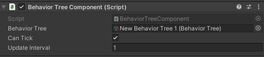

Behavior Tree Component
The behavior tree component is a MonoBehavior is responsible for controlling and executing a behavior tree asset. The only way to execute a behavior tree is to attach this component to a GameObject and assigna behavior tree asset to it. 
Tick
When CanTick is set to false, component will run the behavior tree on each game update; otherwise, if set to false, it will use a user defined interval defined by the UpdateInterval property
Override assigned behavior tree
Currently running behavior tree can be replaced by another tree asset at runtime by using the BehaviorTreeComponent.RunBehaviorTree() method.